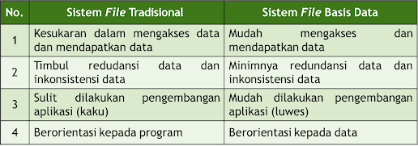

~ Sistem File Tradisional
Sistem ini berorientasi pada program aplikasi dan setiap aplikasi berdiri sendiri, seperti: aplikasi produk, aplikasi inventory dan aplikasi payroll.
~ Sistem File Basis Data
Sistem ini menyediakan fasilitas atau mempermudah dalam menghasilkan informasi yang digunakan oleh pemakai untuk mendukung pengambilan keputusan.
~ Perbedaan File Tradisional dan Basis Data

~ Konsep Dasar Basis Data
1. Pemrosesan basis data sebagai perangkat andalan sangat diperlukan oleh berbagai institusi dan perusahaan sebagai media penyimpanan data.
2. Data adalah representasi fakta dunia nyata yang mewakili suatu objek, seperti manusia (pegawai, mahasiswa, pembeli), barang, hewan, peristiwa, konsep, keadaan dan sebagainya yang direkam dalam bentuk angka, huruf, simbol, teks, gambar, bunyi atau kombinasinya.
3. Basis data adalah sekumpulan data yang terintegrasi yang diorganisasikan untuk memenuhi kebutuhan para pemakai di dalam suatu organisasi.
4. Database Management System (DBMS) adalah perangkat lunak yang menangani semua pengaksesan ke basis data.
5. Lingkungan basis data merupakan sebuah habitat dimana terdapat basis data untuk bisnis dan pengguna memiliki alat untuk mengakses data.
6. Tujuan utama dari sistem basis data yaitu menyediakan pemakai melalui suatu pandangan abstrak mengenai data, dengan menyembunyikan detail dari bagaimana data disimpan dan dimanipulasikan.
~ Komponen Basis Data
1. Data
2. Hardware
3. Software
4. User
5. DMBS
6. Optional Software
~ Pengguna Basis Data
1. System Engineer
2. Database Administrator
3. End User